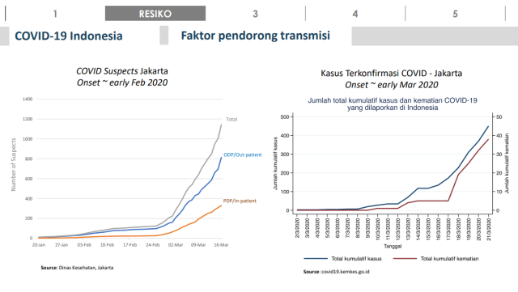
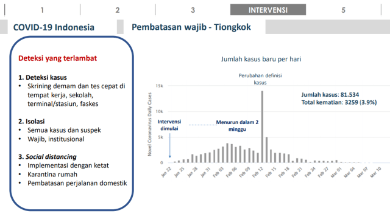

Awal Masuk Indonesia
Tekno & Sains 22 April 2020 7:02
Beberapa waktu lalu, ahli epidemiologi Universitas Indonesia, dr Pandu Riono mengatakan, virus corona sejatinya telah masuk ke Indonesia sejak akhir Januari 2020, bukan Maret sebagaimana diumumkan oleh pemerintah.
“Dari data laporan pelayanan kesehatan masyarakat, itu sudah terjadi kenaikan orang dengan gejala kasus COVID-19 seperti demam, batuk, dan sesak napas. Data kasusnya melonjak (sejak Januari), dan kemudian baru Maret ada laporan yang 3 orang positif COVID-19,” ujar Pandu ketika dikonfirmasi kumparanSAINS pada Senin (20/4). Pernyataannya itu mengacu pada hasil analisis data surveillance milik Dinas Kesehatan (Dinkes) DKI dan Kementerian Kesehatan (Kemenkes), sehingga tidak ada alasan bahwa spekulasi ini tak sampai ke pemerintah. "Jadi bukan data dari saya. Data itu sudah melaporkan, sudah menemukan kasus-kasus. Mereka (Kemenkes) sudah tahu kok," ujarnya.
Bukti ODP (orang dalam pemantauan) dan PDP (pasien dalam pengawasan) suspect COVID-19 telah ada di Indonesia sejak akhir Januari 2020 bisa dilihat dari gambar di bawah ini:
Data ini pula yang kemudian dijadikan acuan untuk melakukan riset skenario penyebaran COVID-19 di Indonesia. Pandu memang diminta langsung oleh Kementerian Perencanaan Pembangunan Nasional Republik Indonesia/Badan Perencanaan Pembangunan Nasional (Bappenas) untuk melakukan riset tersebut, dan Bappenas lah yang membantunya untuk mendapatkan data suspect COVID-19 dari Dinkes DKI Jakarta.
Dalam riset berjudul “COVID-19 Modelling Scenarios Indonesia”, Pandu bersama tiga rekannya dari Fakultas Ilmu Kesehatan Masyarakat Universitas Indonesia: Iwan Ariawan, Muhammad N Farid, dan Hafizah Jusril, merancang skenario pemodelan berdasarkan perhitungan yang mencakup jumlah populasi orang dewasa; tingkat reproduksi dasar (basic reproduction rate) bahwa setiap pasien positif COVID-19 minimal menginfeksi dua orang lainnya; jumlah pasien (case rate) yang memerlukan perawatan di rumah sakit; dan waktu penggandaan kasus, yakni 4 hari. Adapun Indikator yang digunakan adalah total jumlah penduduk Indonesia sebesar 268 juta jiwa. Dari jumlah penduduk tersebut, 52,9 persen populasi tinggal di wilayah urban; 14,8 persen tinggal di rumah kurang dari 8 meter persegi; angka terjadinya pneumonia 1,3 per 1.000 orang; 28,2 persen penduduk bepergian; 50,2 persen mencuci tangan dengan cara tidak benar.
Sedangkan indikator yang juga masuk dalam pertimbangan adalah provinsi yang sudah teridentifikasi adanya kasus positif COVID-19, dan beberapa kota di Indonesia yang memiliki penerbangan langsung dari dan ke Wuhan, termasuk Medan, Batam, Jakarta, Denpasar, Manado, dan Makassar.
Mereka kemudian mengestimasikan penyebaran virus corona dalam 4 skenario pemodelan, yang masing-masing skenario mempunyai implikasi jumlah kasus yang berbeda, tergantung pada intervensi apa yang diterapkan oleh pemerintah, berikut skenarionya: Tanpa Intervensi, Intervensi rendah (penerapan social distancing secara sukarela dan pembatasan kerumunan), Intervensi moderat (tes cepat virus corona massal atau massive rapid test dengan cakupan rendah dan penutupan sekolah/bisnis), Intervensi tinggi (tes massal cakupan tinggi, mewajibkan jaga jarak sosial). Dalam skenario terburuk dengan titik pusat awal penyebaran berada di DKI Jakarta, hasil pemodelan menunjukkan bahwa jumlah kasus virus corona di Indonesia bisa mencapai 2,5 juta orang jika pemerintah tidak melakukan intervensi, dan 1,7 juta orang jika pemerintah melakukan intervensi rendah.
Sedangkan untuk intervensi moderat, jumlah kasus diperkirakan mencapai 1,2 juta orang yang terpapar virus corona. Sementara jika pemerintah menerapkan intervensi tinggi, maka kasus virus corona bisa ditekan lebih signifikan hingga 500 ribu orang terinfeksi COVID-19.
Tim lantas memberikan beberapa contoh kasus di mana negara melakukan intervensi tinggi untuk menekan laju penyebaran virus. China, misalnya, sejak intervensi dilakukan pada 22 Januari, kasus COVID-19 yang terkonfirmasi mulai mengalami penurunan dalam kurun waktu 2 minggu.
Di akhir penelitian, tim merekomendasikan beberapa kebijakan yang bisa diambil pemerintah untuk menekan angka kasus virus corona di Indonesia. Beberapa kebijakan tersebut adalah: Mewajibkan:
1.Social distancing: safe home shelter (bukan imbauan) yang dilakukan secara nasional, dengan cara menutup sekolah, kantor dan tempat wisata, tempat berkumpul. Menutup perjalanan ke dalam dan luar pulau, provinsi, kota, dan kabupaten, serta pembatasan transportasi publik,
2.Perluasan rapid test untuk screening (test massal) dan penambahan uji lab PCR serta perluasan dengan Genexpert,
3.Memberlakukan kebijakan khusus saat di bulan-bulan tertentu, Ramadhan, Lebaran, dan Paskah, seperti imbauan beribadah di rumah, salat ied ditiadakan, dan larangan mudik,
4.Memenuhi kebutuhan pelayanan kesehatan.
Semua itu bisa dilakukan jika pemerintah benar-benar ingin mengakhiri wabah virus corona secara total.